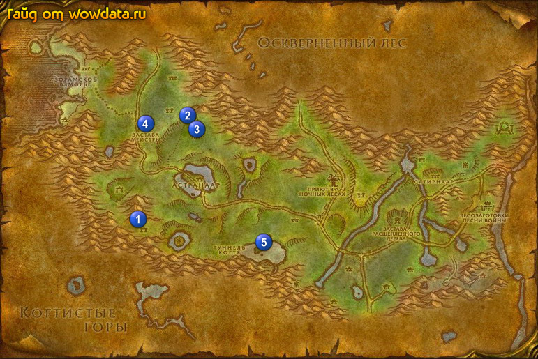

1) Как прилетите то недалеко, у столба закончите <Гордокрылы Каменного Когтя>, начните
<Кайнет Штиль>.
2) В гостинице закончите <Путь в Ясеневый лес>. Пройдите в дом на востоке и закончите <Руины Звездной Пыли>, начните <Зеркало Небес>.
3) Бегите вниз к Святилище Огненной Расщелины, зачистите поляну от лишних мобов и убейте Илкруд Магтрулл 1 (25, 61) для <Башня Алталакса>, убивайте его так быстро как только можете, он вызовет двух демонов бездны если вы слишком затянете.
4) Идите по дороге, и на отрезке 2 (35, 33) и 3 (36, 36) убейте Дал Жилотяг (он патрулирует этот отрезок) для <Устранение угрозы>.
5) Если хотите можете побить мобов до 25 лвл.
6) Бегите в Maestra’s Post 4 (26, 38) и закончите <Башня Алталакса>, начните <Башня Алталакса>.
7) Если вы охотник то начните и сделайте <Поставка для Аубердина>, это квест на эскорт, и практически никто кроме охотника соло его сделать не в состоянии, разве что лекари, которые будут хилить нпс пока его убивают. Квест заканчивается в том же месте где и начинался.
8) Бегите в Астранаар.
9) Закончите <Устранение угрозы> в гостинице.
10) Бегите в 5 (49, 67), начните <Наручи Стихий> и делайте его в озере рядом. Когда соберете 5 браслетов, используйте на них свиток, затем идите и закончите квест, там же где и начинали. Игнорируйте следующий квест ( <Маг-призыватель> ).
11) Теперь вы должны стать 25 лвл, если нет, то ныряйте и мочите элементарей.
12) Вернитесь по руне в Аубердин.
13) Плывите в Гавань Менетил.